地政学
ブラザヴィルはコンゴ川を挟み、キンシャサと向かい合う首都です。河川交通、国境管理、外交、石油国家の行政が近く、中央アフリカの広域政治を水辺から読む入口なのです。川は境界であり接続の舞台でもあります。
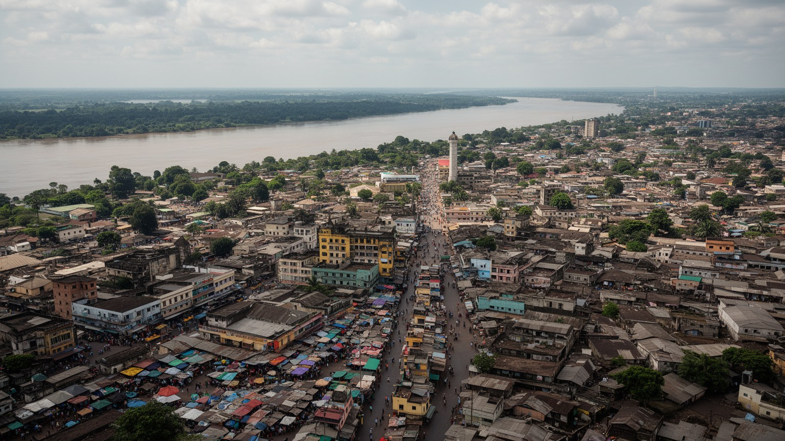
🇨🇬 コンゴ共和国 / 首都 / World City Atlas
コンゴ川の北岸で、対岸のキンシャサと向かい合う首都です。行政、河港、外交、石油収入、音楽、教会、市場、丘陵住宅地が、川沿いの都市に重なっています。
都市の骨格
ブラザヴィルは、川を隔ててキンシャサと向かい合う珍しい首都です。行政地区、河港、丘陵住宅地、教会、市場、音楽の場が近く、国境、資源、都市生活が同じ水辺で読めます。
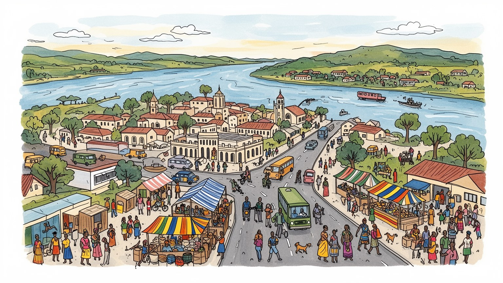
ブラザヴィルはコンゴ川を挟み、キンシャサと向かい合う首都です。河川交通、国境管理、外交、石油国家の行政が近く、中央アフリカの広域政治を水辺から読む入口なのです。川は境界であり接続の舞台でもあります。
行政、河港、商業、通信、建設、教育、保健、非公式取引が都市の雇用を支えます。国家収入は沿岸の石油に依存しますが、首都では役所、市場、修理業、若者の仕事探しが日常経済を形作っています。暮らしも支えます。
カトリック教会、プロテスタント教会、独立系教会、祖先儀礼、リンガラ音楽、サプールの装いが都市文化を彩ります。フランス語行政と地域言語が交わり、葬礼、礼拝、家族の集まりが都市の人々の帰属を支えています。
住民は丘陵の住宅地、河岸道路、市場、乗合交通、教会、学校を使い分けます。旅行者はサントアンヌ聖堂、ポトポト、国立博物館、川辺の眺めを訪ね、対岸のキンシャサも意識します。暮らしと観光が川沿いで重なります。
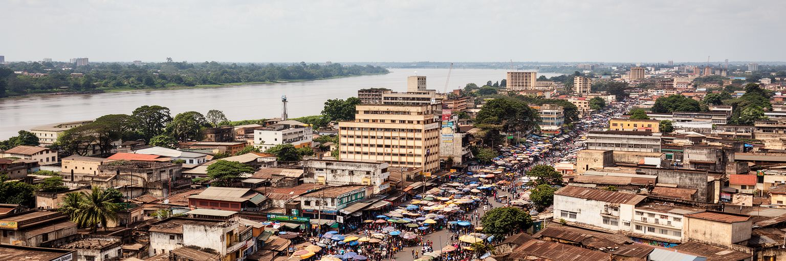
ブラザヴィルを理解する入口は、コンゴ川の幅と流れです。都市は川の北岸に沿って広がり、対岸には民主共和国コンゴの首都キンシャサが見えます。世界でも珍しく二つの国家首都が川を挟んで向かい合うため、水面は風景であるだけでなく、国境、交易、警備、親族訪問、外交、感染症対策を同時に背負います。川は港湾物流を支え、内陸部との移動を可能にし、都市の湿度と景観を作ります。一方で、渡河の手続きや船の安全、洪水、河岸の開発は生活に直接関わります。川沿いの道路を歩くと、行政地区、ホテル、港、住宅地、教会、市場が近い距離で並び、首都が水辺に正面を向けていることが分かります。キンシャサの巨大な人口と文化的な引力は常に視界に入り、ブラザヴィルの規模を小さく見せることもあります。しかし、この近さこそが都市の個性です。川を境に制度、通貨、行政、治安、都市の速度が変わり、同時に音楽、商売、家族関係は境界を越えて響きます。水位の変化や船着き場の混雑は、物価、通勤、物流の遅れとしてすぐ暮らしに表れます。川辺の公共空間をどう整え、誰が安全に使える場所にするかも、首都の成熟を測る課題です。朝の霧、夕方の渡し、河岸の警備は、川が日常の時間を刻むことを教えます。その姿も見えます。ブラザヴィルは川によって守られ、川によって開かれる首都です。
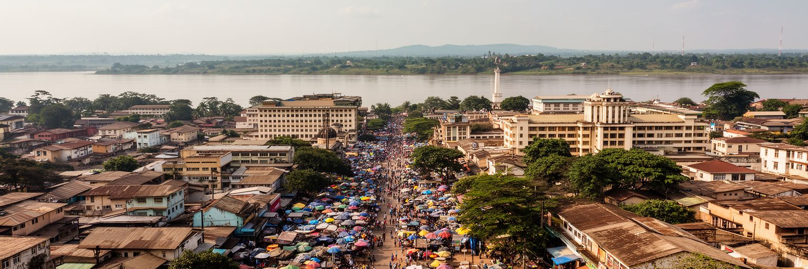
ブラザヴィルはコンゴ共和国の政治中枢として、大統領府、議会、省庁、裁判所、外交機関、国際機関の窓口を抱えます。国土の人口は大都市に偏り、石油収入は沿岸部で生まれますが、その配分、契約、予算、治安、教育、保健、インフラの判断は首都へ集まります。政治の安定は都市の雇用と公共投資を支えますが、権力の集中、選挙をめぐる緊張、汚職への不信、地域間格差も首都で見えやすくなります。官庁街の整った表情の近くには、公共サービスを待つ住民、市場で働く人、若者の失業、交通の混雑があります。ブラザヴィルの政治性は、記念碑や庁舎だけでなく、行政窓口の手続き、道路整備、学校、病院、水道、警備の配置として現れます。首都は国家の顔であると同時に、国家が市民へ何を届けられるかを測られる場所です。フランスとの歴史的関係、地域外交、隣国との国境管理もこの都市の仕事に含まれます。政治を読むには、権力者の建物だけでなく、公共サービスが日々の生活へ届く距離を見る必要があります。地方から首都へ来る人は、許認可、教育、医療、仕事の情報を求め、行政の集中を実感します。中心に権限が集まるほど、地方都市や農村へどう資源を戻すかも問われます。選挙の季節や式典の日には、道路規制や警備が日常の動線を変え、政治が街路に現れます。そこに首都の信頼が表れます。
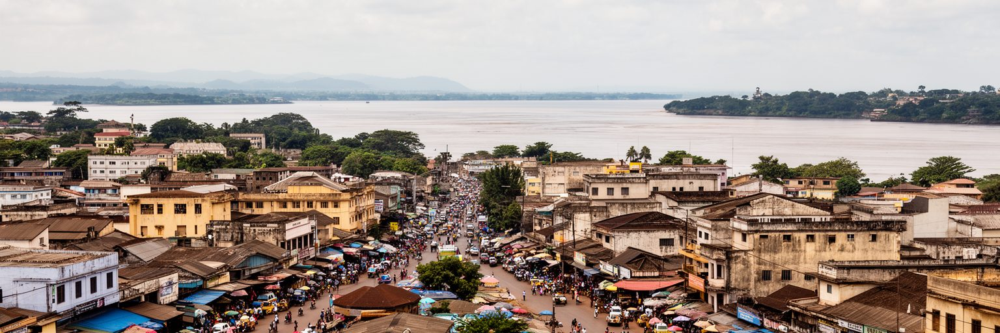
ブラザヴィルの都市史には、フランス植民地支配と第二次世界大戦の記憶が深く刻まれています。町は十九世紀末にフランスの拠点として整えられ、赤道アフリカ支配の行政中心として発展しました。第二次世界大戦中には自由フランスの重要な拠点となり、遠いヨーロッパの戦争がコンゴ川の都市を政治舞台に変えました。この歴史は、単なる過去の逸話ではありません。フランス語の行政、カトリック学校、官庁の制度、都市の地区名、記念碑、教育の語り方に残り、独立後の国家建設にも影響しています。同時に、植民地都市の中心と周辺の分断、労働動員、土地の支配、文化の序列も忘れてはいけません。ブラザヴィルを歩くと、古い建築や並木道が落ち着いた首都の雰囲気を作りますが、その背後には支配と抵抗、協力と利用の複雑な歴史があります。独立後の都市は、植民地の制度を受け継ぎながら、自国の政治、音楽、言語、宗教で意味を作り直してきました。学校で語られる歴史、記念日の式典、通りの名前、博物館の展示は、過去をどう選び直すかを示します。植民地期の遺産は便利な制度にも不平等な記憶にもなるため、現在の市民生活と結び付けて読む必要があります。川岸の美しい建物を眺める時も、誰の労働で造られた空間かを考える視点が必要です。歴史を観光的な記念だけに閉じず、誰が都市を造り、誰が周縁に置かれたのかを読むことが大切です。
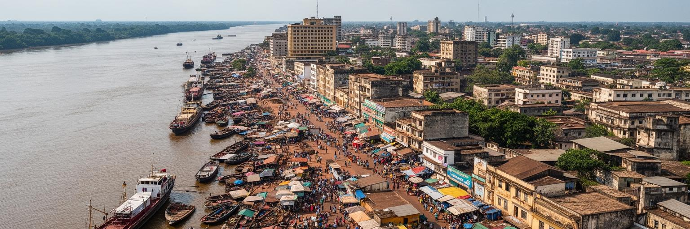
ブラザヴィルの経済は、官庁だけで動くわけではありません。コンゴ川の港、道路、倉庫、市場、乗合交通、携帯通信、修理業、飲食、小売が、都市の日常的な商業を支えます。国の大きな外貨収入は大西洋岸の石油産業に強く依存しますが、首都の住民が毎日関わる仕事はもっと細かく、店の仕入れ、川を越える荷物、建設現場、学校や病院のサービス、街路の非公式販売に広がります。港は内陸部との結びつきを示し、市場は現金の流れと物価の変化をすぐに映します。輸入品、燃料、食料、建材の価格は家計に響き、通貨や国境手続きの変化も商売の負担になります。若者にとって、安定した公務や大企業の仕事は限られ、技能、縁故、小商い、移動力が重要になります。都市の活力は、統計に表れにくい柔軟な働き方にも支えられています。一方で、非公式経済は収入が不安定で、事故、病気、警察や規制、場所代に弱い面があります。女性の販売員、運転手、荷役、携帯送金の代理店、修理職人は、都市の小さな循環を作ります。市場の屋根、衛生、水、照明、保管場所が整うかどうかで、働く人の安全も変わります。小さな商いが続くかどうかは、道路の状態、警備、金融へのアクセスにも左右されます。ブラザヴィルの商業を読むことは、資源国家の首都で、資源以外の人々がどう生活を組み立てているかを読むことです。
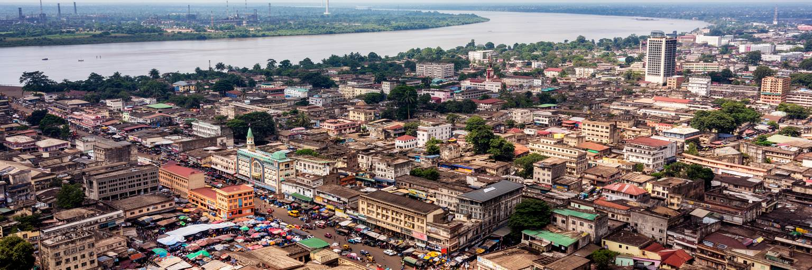
コンゴ共和国の経済を語る時、石油は避けられません。主な生産地や港湾都市は大西洋側にありますが、石油から得られる歳入、契約、外貨、公共投資、財政リスクはブラザヴィルの行政と都市生活に深く関わります。道路や公共建築、政府職、輸入消費、建設需要は、資源価格の変動を受けやすいです。原油価格が高い時には支出の余地が広がりますが、下落すると財政、雇用、公共サービス、債務管理にすぐ影響します。資源収入は国家に大きな力を与える一方、産業の多様化を遅らせ、雇用の広がりを限定する危険もあります。首都の若者が求める仕事は、石油収入だけでは十分に生まれません。農業、加工、物流、観光、情報通信、教育、文化産業をどう育てるかが長期課題になります。ブラザヴィルのビジネス街や官庁街を見る時、背後にある石油収入の流れを意識すると、都市の見え方が変わります。建物の新しさや道路の整備は、資源に支えられた国家の余力であり、同時に価格変動への脆さの表れでもあります。石油収入が学校、病院、水道、道路維持へ安定して届くかは、住民が国家を信頼できるかに関わります。透明性が低いと、資源は豊かさより不満の源にもなります。会計、契約、環境管理を市民が理解できる形にすることも、資源国家の都市には重要です。首都の持続力は、資源の配分を生活基盤と次の産業へ変えられるかで決まります。
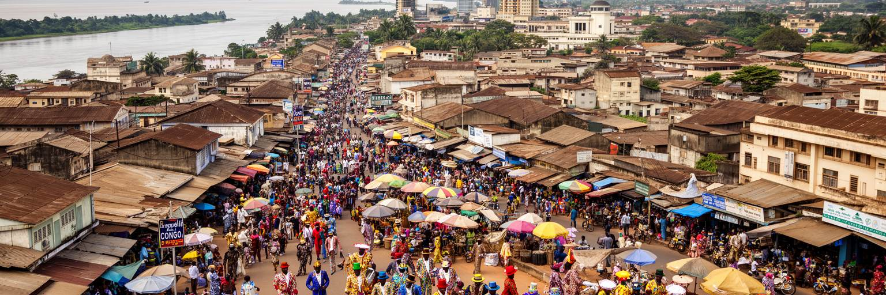
ブラザヴィルの文化を語る時、音楽と装いは重要な入口になります。コンゴ川流域ではルンバやスークースの音楽文化が発展し、対岸のキンシャサと響き合いながら、酒場、ラジオ、ダンス、結婚式、葬礼、政治集会を彩ってきました。音楽は娯楽であるだけでなく、言語、都市のユーモア、愛情、社会批評、移動の記憶を運びます。さらに、サプールと呼ばれる洗練された装いの文化は、貧しさや不安定さの中でも自尊心、技術、社交、演技を表す方法として知られます。鮮やかな服装は単なる消費ではなく、都市で自分をどう見せ、どう尊重されたいかという表現です。ポトポトのような地区には、移民、芸術家、商人、宗教施設、飲食店が集まり、日常の混ざり合いが文化を生みます。フランス語、リンガラ語、キトゥバ語、地域の言葉が重なり、歌詞や会話に都市の多声性が現れます。ブラザヴィルの文化は、国家の公式行事よりも、路地の音、仕立て屋、教会の合唱、夜の演奏、家族の祝いに強く宿ります。録音産業やライブの場が十分に整わなくても、音楽は携帯電話、礼拝、家庭の祝いを通じて広がります。服を整えることも、困難な日常の中で自分の姿勢を保つ行為です。若い表現者に場所と収入があるかどうかは、文化の継続に直結します。経済が厳しい時ほど、音楽と装いは人々の尊厳を支える都市の言葉になります。
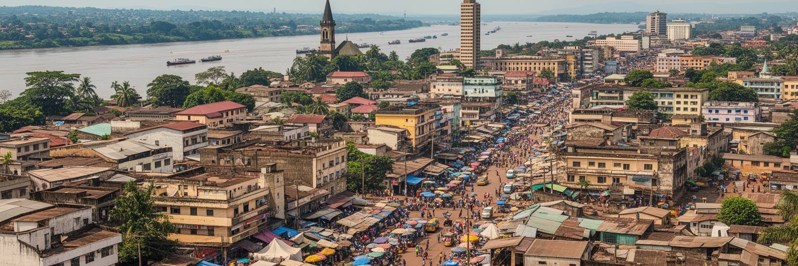
ブラザヴィルの宗教生活は、都市の時間をはっきり形作ります。カトリックの大聖堂、プロテスタント教会、独立系教会、復興教会、祈祷集会は、礼拝だけでなく、教育、相談、音楽、葬礼、相互扶助の場にもなります。サントアンヌ聖堂のような建築は観光名所として目立ちますが、信仰の多くはもっと日常的です。日曜日の服装、聖歌、献金、病気の相談、家族の祝い、葬儀への参加が、都市で暮らす人の社会関係を支えます。キリスト教が強い一方で、祖先への敬意や地域の儀礼も生活感覚の中に残り、宗教は単純に西洋化された制度ではありません。家族と親族のつながりは、住居、就職、学費、病院、葬礼の費用を助け合う安全網になります。しかし、その負担は若い世帯や女性に重くかかることもあります。教会は希望を語る場所であると同時に、社会不安や貧困が集まる場所でもあります。ブラザヴィルの信仰を読むには、建物の美しさだけでなく、祈りがどのように食事、病気、失業、移動、教育、葬送を支えているかを見る必要があります。都市へ移った人にとって、教会や親族会は出身地との関係を保つ窓口にもなります。互助は温かい支えですが、献金や葬礼費用の期待が家計を圧迫することもあります。礼拝後の食事や合唱の練習は、孤立しやすい都市生活に顔の見える関係を作ります。宗教と家族は、公共制度の不足を補う力にも、個人を縛る圧力にもなります。
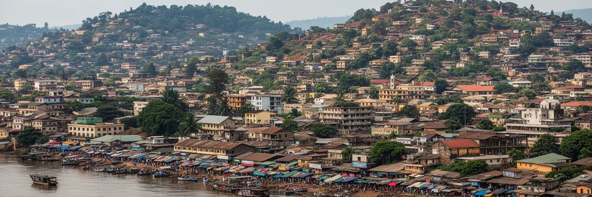
ブラザヴィルの住宅地は、川沿いの中心部だけでなく、丘陵や周辺部へ広がっています。人口増加に伴い、正式な宅地、自己建設の住宅、未舗装道路、斜面地、郊外の新しい区画が混在し、都市の輪郭は少しずつ外へ伸びています。住まいの問題は、家そのものの質だけではありません。水道、排水、電力、学校、診療所、公共交通、廃棄物処理、雨季の浸水や土砂の流れが、暮らしの安全を左右します。丘陵地では眺めが良い一方、道路整備や排水が不十分だと、雨のたびに移動が難しくなります。中心部に近い地区は仕事や学校へ行きやすいですが、家賃や地価が上がりやすく、低所得世帯は遠い場所へ押し出されます。乗合タクシーや徒歩に頼る生活では、通勤時間と交通費が家計を圧迫します。住宅の広がりは都市の活力を示しますが、計画なしに進むと、公共サービスが追いつかない地区を増やします。ブラザヴィルの生活を読むには、河岸の景観だけでなく、丘の住宅地、狭い道路、雨水の流れ、学校までの道を見なければなりません。土地の権利が曖昧な場所では、住民は家を直す投資にも不安を抱えます。排水路、街灯、ごみ収集、近所の安全は、住宅の価値以上に日々の暮らしを左右します。子どもや高齢者が雨の日にも安全に移動できるかが、住宅地の質を示します。都市の公平性は、誰が安全な場所に住めるかで測られます。
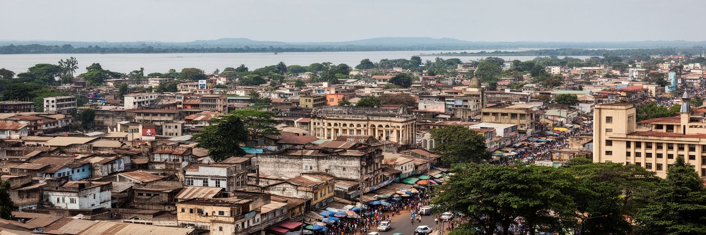
ブラザヴィルの最大の特徴は、キンシャサとの距離の近さです。川の向こうに見える都市は、人口規模も文化的影響力も大きく、ブラザヴィルの住民にとって隣の外国であり、親族、商売、音楽、政治ニュースの近い相手でもあります。二つの首都は同じコンゴ川流域の文化を共有しながら、異なる国家制度、通貨、治安、行政、都市の速度を持ちます。渡し船や手続きは、近さを簡単な移動へ変える時も、国境の重さを感じさせる時もあります。感染症対策、治安、税関、移民管理、河川交通の安全は、二都市の関係を左右します。文化面では、リンガラ音楽、ファッション、ラジオ、宗教、言葉が川を越えて響き合い、競争と共鳴を生みます。キンシャサの巨大さはブラザヴィルを影に置くこともありますが、ブラザヴィルにはより落ち着いた行政首都としての性格があり、比較によって個性が見えてきます。二つの都市を別々に見るのではなく、川を挟んだ一つの広域都市圏として読むと、中央アフリカの国境、植民地史、文化、物流の複雑さが立体的に見えます。将来の橋や交通改善が議論されるたび、移動の便利さと国境管理の緊張が同時に浮かびます。近いからこそ、制度の違いをどう扱うかが重要です。対岸の流行を受け取りながら、自分の静けさを保つところに都市の個性があります。ブラザヴィルは対岸を意識することで、自分の役割を確かめる都市です。
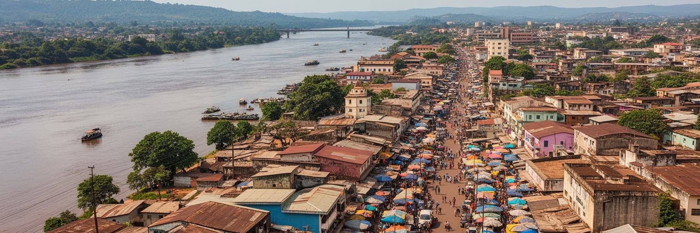
ブラザヴィルの観光は、巨大な名所を次々に巡る形ではなく、川沿いの首都を歩いて読む旅に向いています。サントアンヌ聖堂の独特な建築、国立博物館、ポトポト地区、市場、河岸の眺め、記念碑、古い植民地期の建物、音楽の場が、都市の層を見せます。対岸のキンシャサを望むだけでも、この都市が国境と大河の上に成り立つことが分かります。旅行者には、治安、移動、現地案内、写真撮影の配慮、暑さ、雨季の道路状況を意識する必要があります。観光産業はまだ大規模ではありませんが、それは都市の魅力が弱いことを意味しません。むしろ、生活に近い市場、教会、音楽、河岸の散歩を丁寧に見ることで、首都の空気が伝わります。近郊の自然やコンゴ川流域への旅の入口としても重要です。ただし、観光を育てるには、宿泊、案内、交通、安全、文化施設の維持、地域住民への利益配分が欠かせません。ブラザヴィルの景観は、派手なリゾートではなく、川、歴史、信仰、日常が静かに重なる点に価値があります。旅行者が市場や教会を訪れる時は、住民の生活空間へ入るという感覚が必要です。写真や消費だけでなく、案内人、工芸、音楽、食堂へ利益が残る形が望まれます。朝夕の光に変わる川岸を歩くと、観光と生活の距離の近さが分かります。観光は都市を飾るものではなく、住民の生活を尊重しながら、その重なりを理解する方法です。
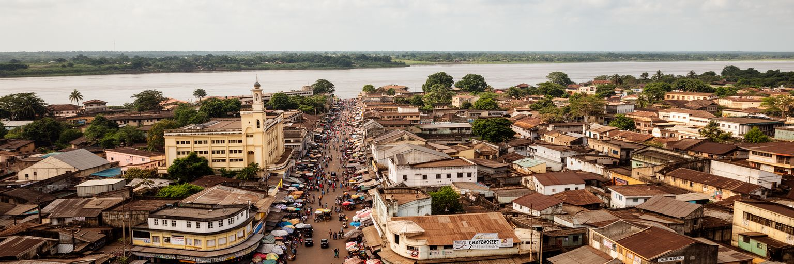
ブラザヴィルは、都市規模だけで評価すると見落としやすい首都です。対岸のキンシャサが巨大な人口と文化的迫力を持つため、ブラザヴィルは静かに見えるかもしれません。しかし、コンゴ川の北岸には、国家の政治判断、石油収入の配分、河港商業、植民地と自由フランスの記憶、宗教、音楽、サプールの装い、丘陵住宅地の生活が凝縮されています。川は境界であり通路であり、都市の正面でもあります。首都の安定は官庁街に見えますが、若者の雇用、公共サービス、住宅、非公式経済、資源依存、気候と洪水のリスクは日常の中に残ります。ブラザヴィルを読む時は、華やかな統計だけでなく、市場で働く人、教会に集まる家族、船着き場の手続き、雨季の道路、音楽の夜、対岸を眺める河岸を一緒に見る必要があります。そこに、中央アフリカの首都が抱える強さと脆さが現れます。ブラザヴィルは大河に守られながら、同じ大河によって外の世界へ開かれています。その二重性こそ、この都市を世界都市地図の中で読む理由です。首都を評価する時は、石油収入や外交だけでなく、公共サービスが丘の住宅地や市場の働き手へ届くかを見る必要があります。川の景観と生活基盤を同時に読むことで、都市の本当の厚みが見えてきます。その視点が必要です。静かな首都の表情の奥に、国家、文化、生活の密度が確かにあります。